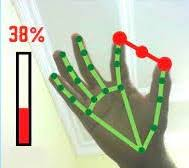
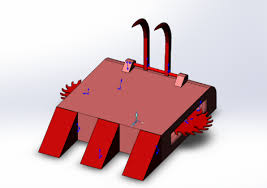

My Projects





I am an Electronics and Communication Engineering graduate passionate about merging Robotics, Artificial Intelligence, Machine Learning, and Computer Vision to build intelligent, real-world systems. With hands-on experience in Machine Learning, Computer Vision, Circuit Design, and Low-Power Electronics, I bridge the gap between hardware and intelligent software. Skilled in Python, AI frameworks, and electronic circuit design, I thrive on solving complex problems and transforming ideas into tangible innovations. Driven by curiosity and creativity, I’m eager to contribute to cutting-edge, interdisciplinary projects that harness the power of AI and electronics to shape smarter and more efficient technologies.
Skills
Experience
Education
M. Rahman, M.K. Hasan, M. M. Madhurja, and M. Ahmad, “Ensemble of boosting algorithms for Parkinson diseasediagnosis”, in Proceedings of the International Conference on Information and Communication Technology for Development: ICICTD 2022, Springer, 2023, pp. 343–354.
The thesis aimed to develop a deep learning model for segmenting remote sensing images. The researchfocused on analyzing the challenges in geospatial image segmentation for both single-class and multi-class scenarios,evaluating existing solutions, and addressing their limitations. The objective was to design a robust model applicable to both segmentation types and compare its performance in terms of loss, accuracy, and learning rate. A tri-UNet architecture was implemented, leveraging ResNet50 and VGG19 as backbones to enhance the model’s capability and reliability.
A collection of certifications reflecting my continuous learning journey.

The Data Science for Everyone Track provided me with a strong foundation in the data science workflow, covering essential concepts such cleaning, analysis, visualization and clustering, etc. Through interactive lessons and real-world examples, I learned how data drives decision-making across industries and gained hands-on experience with Python, data manipulation, and basic statistical thinking.
Here are some of certificates of all courses under Machine Learning

I have learned the core concepts of machine learning, including supervised and unsupervised learning, regression, classification, and neural networks. I have gained practical skills in implementing algorithms, preprocessing data, and evaluating models on real-world datasets. The course also covers model optimization, feature engineering, and best practices for deploying machine learning solutions.
Here’s the certificate: Data Science for Everyone Track
I have learned the core concepts of neural networks, including perceptrons, activation functions, backpropagation, and deep learning architectures. I have gained practical skills in building, training, and evaluating neural network models on real-world datasets using Python and relevant frameworks.
Here’s the certificate: Neural Network
I have received the 2nd Best Paper Award at the International Conference on Information and Communication Technology for Development (ICICTD), 2022 for outstanding research contribution and presentation quality.
Here’s the certificate: Second Best Paper Award
© 2025 Maksuda Rahman | All Rights Reserved